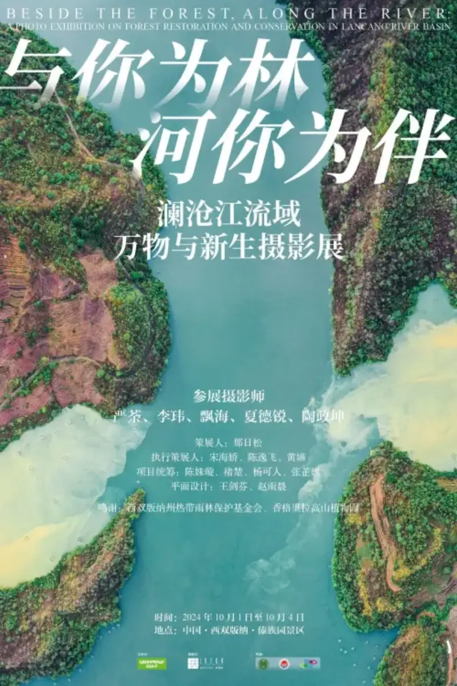
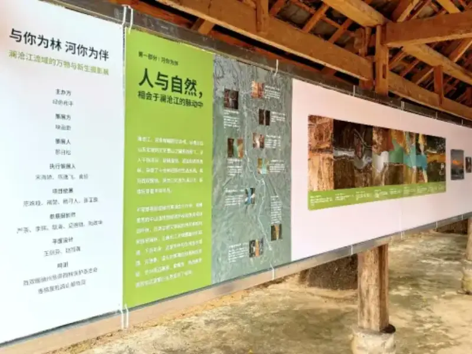
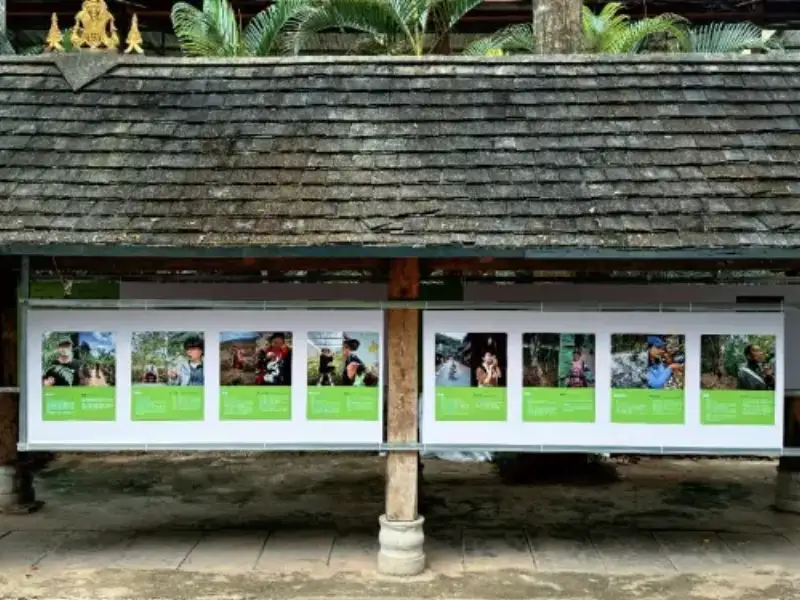

Xishuangbanna, September 30, 2024. On October 1, the photo exhibition "With You as Forest, With You as River: All Things and New Life in the Lancang River Basin" opens at the "One Great River" Xishuangbanna International Photo Exhibition. The show is hosted by Greenpeace, the international environmental group. It presents the ecological beauty of the Lancang River basin and stories of forest restoration. It runs until October 4.

Yunnan has the richest range of forest types in China. From south to north it holds tropical forest, evergreen broadleaf forest, coniferous forest, shrub meadow, and alpine tundra. The Lancang River basin is a microcosm of Yunnan's diverse forest ecosystems. In the past, large-scale human activity caused forest loss and threatened biodiversity. Now, more and more people work to protect and restore forests. They want to rebuild their link with nature.

"Witnessing, recording, and acting are key ways Greenpeace pushes for environmental problems to be noticed and solved," said Chen Shuxuan, head of Greenpeace's forest project. "This show uses the Lancang River as a guide. It has two parts, 'With You as Forest' and 'With You as River.' It shows the rich biodiversity of the basin. It also presents the vivid forest restoration stories that Greenpeace has witnessed in recent years across many parts of Yunnan."
Restoring a forest is far more than planting a few trees. It starts with picking a seed that fits the local environment and helping it take root. It ends with raising a sapling into a forest that protects the soil and water and feeds all living things. This needs research, technology, and funding. It also needs the participation of local communities and the use of local knowledge. "With You as Forest" presents 11 local people from the Lancang basin who take part in forest restoration. It also presents 11 plants that play a key role in their work and lives. By matching the character of each person with the traits of a plant, it tells how they and the forest shape each other in the restoration work. "With You as River" gathers work by several photographers, including Yan Tu, Li Wei, and Piao Hai. From aerial shots to close-ups, and from outside visitors to local guardians, they use many viewpoints to capture the rich habitats and species of the Lancang basin.

Each work in the show is not only a true record. It is also a bridge that calls on the public to respect nature and to notice how their own actions affect it. Through this exhibition, Greenpeace wants more people to see the hard work and challenges of forest restoration on the ground. It also wants them to see the close link between forest restoration, species protection, and local community development. In the future, Greenpeace will keep watching China's forests and biodiversity. Along with more of the public, it will witness, record, and support conservation and restoration work.